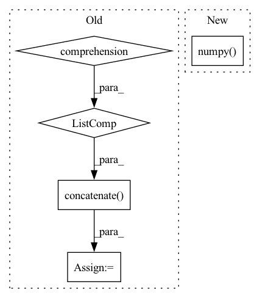

Pattern ID :10769
Before Change
return
P = 10
points = np.concatenate(
[X.projection(_G.sample()) for _ in range(P)] ,
axis=1
)
assert points.shape == (X.dim, P)
B = 5
features = np.random.randn(B, in_rep.size, P)
filters = np.zeros((out_rep.size, in_rep.size, basis.dim, P), dtype=np.float)
filters = basis.sample(points, out=filters)
self.assertFalse(np.isnan(filters).any())
self.assertFalse(np.allclose(filters, np.zeros_like(filters)))
a = basis.sample(points)
b = basis.sample(points)
assert np.allclose(a, b)
output = np.einsum("oifp,bip->bof", filters, features)
for g in G.testing_elements():
output1 = np.einsum("oi,bif->bof", out_rep(g), output)
transformed_points = X.action(inclusion(g)) @ points
transformed_filters = basis.sample(transformed_points)
transformed_features = np.einsum("oi,bip->bop", in_rep(g), features)
output2 = np.einsum("oifp,bip->bof", transformed_filters, transformed_features)
if not np.allclose(output1, output2):
print(f"{in_rep.name}, {out_rep.name}: Error at {g}")After Change
print(f"{in_rep.name}, {out_rep.name}: Error at {g}")
print(a)
aerr = torch.abs(output1 - output2).detach().numpy()
err = aerr.reshape(-1, basis.dim).max(0)
print(basis.dim, (err > 0.01).sum())
for idx in range(basis.dim):
if err[idx] > 0.1:In pattern: SUPERPATTERN
Frequency: 3
Non-data size: 5
Instances Fragment ID: 37152918
Project Name: quva-lab/escnn
Commit Name: 98a89c5f80da2d489df613d8c73d943c69fb7f51
Time: 2022-08-28
Author: gabriele.cesa@gmail.com
File Name: test/kernelspaces/test_restrictedwignereckart.py
M Class Name: TestWEbasis
N Class Name: TestWEbasis
M Method Name: _check_irreps(6)
N Method Name: _check_irreps(6)
M Parent Class: TestCase
N Parent Class: TestCase
M File Name: test/kernelspaces/test_restrictedwignereckart.py
N File Name: test/kernelspaces/test_restrictedwignereckart.py
M Start Line: 224
M End Line: 274
N Start Line: 309
N End Line: 353
Before Change
x = warmup_and_run_forward(traced, *values)
self.assertLastGraphAllFused()
npr = [v.cpu().numpy() for v in values]
npr_2 = [v + i for i, v in enumerate(npr)]
npr_x = np.concatenate( npr_2, axis=1)
np.testing.assert_allclose(npr_x, x.cpu().numpy())
@unittest.skip("temporarily disable")
def test_cat_cpu(self):After Change
x = warmup_and_run_forward(traced, *values)
self.assertLastGraphAllFused()
ref = foo(*values)
np.testing.assert_allclose(ref.cpu().numpy() , x.cpu().numpy())
def test_cat_cpu(self):
self._test_cat("cpu") Fragment ID: 37152919
Project Name: pytorch/pytorch
Commit Name: 5233ff9f159b23649c714bcc643a82192e2d94b1
Time: 2020-10-16
Author: mvz@fb.com
File Name: test/test_tensorexpr.py
M Class Name: TestTensorExprFuser
N Class Name: TestTensorExprFuser
M Method Name: _test_cat(2)
N Method Name: _test_cat(2)
M Parent Class: BaseTestClass
N Parent Class: BaseTestClass
M File Name: test/test_tensorexpr.py
N File Name: test/test_tensorexpr.py
M Start Line: 1038
M End Line: 1047
N Start Line: 1038
N End Line: 1045
Before Change
def decode_latents(self, latents):
latents = 1 / 0.18215 * latents
image = np.concatenate(
[self.vae_decoder(latent_sample=latents[i : i + 1])[0] for i in range(latents.shape[0])]
)
image = np.clip(image / 2 + 0.5, 0, 1)
image = image.transpose([0, 2, 3, 1])
return image
After Change
images_vae = paddle.clip(images_vae / 2 + 0.5, 0, 1)
images = images_vae.transpose([0, 2, 3, 1])
return images.numpy()
def prepare_extra_step_kwargs(self, eta):
// prepare extra kwargs for the scheduler step, since not all schedulers have the same signature
// eta (η) is only used with the DDIMScheduler, it will be ignored for other schedulers. Fragment ID: 37152915
Project Name: paddlepaddle/paddlenlp
Commit Name: 2b96999ecd879f98d65a0f91c0279cf23d8e2abe
Time: 2023-02-14
Author: 105858416+wwbitejotunn@users.noreply.github.com
File Name: ppdiffusers/ppdiffusers/pipelines/stable_diffusion/pipeline_fastdeploy_stable_diffusion.py
M Class Name: FastDeployStableDiffusionPipeline
N Class Name: FastDeployStableDiffusionPipeline
M Method Name: decode_latents(2)
N Method Name: decode_latents(2)
M Parent Class: DiffusionPipeline
N Parent Class: DiffusionPipeline
M File Name: ppdiffusers/ppdiffusers/pipelines/stable_diffusion/pipeline_fastdeploy_stable_diffusion.py
N File Name: ppdiffusers/ppdiffusers/pipelines/stable_diffusion/pipeline_fastdeploy_stable_diffusion.py
M Start Line: 221
M End Line: 227
N Start Line: 221
N End Line: 237